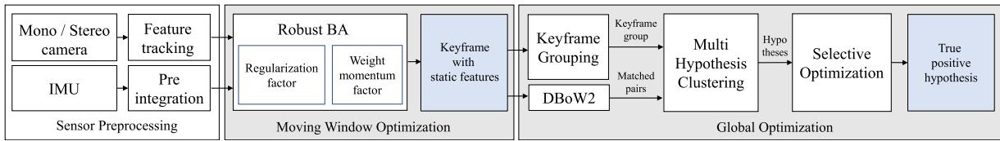
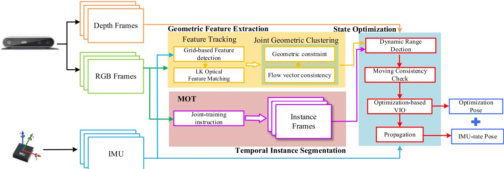
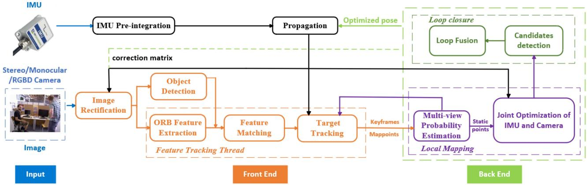
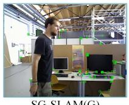

阶段 C · 视觉主干 / Lesson 0068
动态环境视觉惯性（2022–2024）：五篇横向对比
🧩 同一个难题（画面里有人在走、椅子被推开），五篇论文各出奇招——这一节把它们摆在一起比
🎯 主题：动态环境视觉 SLAM 横向横评
👥 作者：DynaVINS / DGM-VINS / RLD-SLAM / CFP-SLAM / SG-SLAM 五篇团队
📅 2022–2024 · 五篇英文题名见正文
本节目标 读完你应该能：说清「动态物体为什么是 SLAM 老大难」，记住「判定 → 处理 → 代价」的三层框架，并在一张表里横向比较 DynaVINS / DGM-VINS / RLD-SLAM / CFP-SLAM / SG-SLAM 五篇的异同。
和前面课程怎么接 ① 第一季 0012 《动态环境视觉 SLAM 综述》是本文的目录——它把方法分成「几何法 → 语义法」，并断言「没有任何单一方法被证明普遍更优」。② 第二季 0028 MSCKF 用 Mahalanobis 距离剔除动态特征，是本文「几何派」的滤波版祖先。③ 本季 0057–0058 VINS-Mono 是 DynaVINS / RLD-SLAM 的直接底座。④ 第一季 0016 事件相机是「绕开动态」的另一条路。
1. 课程定位：这是一节「组课」，不是逐篇细讲
这一节和前面「一篇一讲」的课不同。我们把五篇解决同一个问题 的论文——画面里有人走动、椅子被推开、车在跑——摆在一起做横向对比 。它们招式各不相同：有的靠纯几何，有的靠深度学习语义，有的靠 IMU 救场。摆在一起看，你才会明白「动态环境」这个坑到底有多少种填法，以及为什么没有谁全面胜出 。
这五篇是：DynaVINS （2022，IEEE RA-L）、DGM-VINS （2023，IEEE 期刊）、RLD-SLAM （2024，IEEE 期刊）、CFP-SLAM （2022，IEEE 期刊）、SG-SLAM （2023，IEEE TIM）。注意 DGM / RLD / CFP 三篇的刊名原文未给出 ，我们只标为 IEEE 期刊，不替它们补全。
2. 问题意识：动态物体为什么是 SLAM 的老大难
先建立问题意识。SLAM 整套数学都建立在一个基本假设上：世界是静止的 。更具体地说——「同一块表面，在前后两个相机视角下，它上面的特征点应该自洽地对应同一个三维点」。重投影误差、对极几何、三角化，全靠这条假设吃饭。
动态物体恰恰砸了这条假设：一个人在走动，他身上的特征点「这一帧在这、下一帧跑到那」，但 SLAM 还以为它们是同一个静止三维点的两个观测——于是算出来的相机位姿（你在哪、往哪转）就歪了。下面这张自绘图把这件事画成你一眼能看懂的场景。
动态物体为什么破坏 SLAM
相机视角 1
动态特征（位置乱窜）
相机视角 2（人走动了）
静态特征（位置不变）
SLAM 默认世界静止，用动态点算位姿会系统性算错
这张图在画什么： 左右两格是同一房间、前后两帧的相机画面。红点是「走动的人身上的特征」，绿点是「墙角、地板这些静止物上的特征」。怎么看这张图： ① 左格红点（人身）在右格里整体平移了一大段，而绿点在两格里几乎不动；② 红色虚线串起两帧里同一个人的特征，明显「乱窜」；③ 这正是 SLAM 最怕的情形——它以为这些红点是同一个静止点的两次观测，于是位姿被带偏。要记住的一句话： SLAM 的所有方程都默认世界是静止的，动态物体直接违反这个前提。
3. 三层应对策略：判定 → 处理 → 代价
五篇论文虽然招式不同，但都能套进同一个主干框架。理解了这个框架，你再看任何一篇动态 SLAM 论文都不会乱。这个框架有三层：
① 判定 先回答「哪些特征是动态的」。三条依据：几何依据 （运动不一致 / 对极约束违例）、语义依据 （深度学习认出「人 / 车」这类会动的物体）、运动依据 （多视角统计某点长期在动）。
② 处理 判定完之后怎么对付：剔除 （直接扔掉）、降权 （在优化里压低它的话语权）、单独跟踪 （把动态物当独立目标跟着）、建成地图元素 （把动态物也建成地图）。
③ 代价 不同招式要付不同代价：要不要用 GPU 、要不要预训练模型 、实时性能不能上嵌入式平台。精度从来不是唯一的轴。
动态物体处理的三层策略
输入帧
判定：哪些特征是动态
几何依据
语义依据
运动依据
处理：怎么对付动态特征
剔除
降权
单独跟踪
建成地图元素
输出：位姿
+ 地图
几何法便宜但只认慢动作；语义法认出「人」但贵（要 GPU + 模型）；运动法不用训练但会被相机自运动干扰。
第三层「代价」决定了这些方法能不能真上机器人 / 手机。
这张图在画什么： 一条从左到右的流水线：输入帧，先经过「判定」三依据，再经过「处理」四方式，最后输出位姿与地图。怎么看这张图： ① 判定层的三个方块是并行的三条判动态路子，一篇论文可用其中一条或多条；② 处理层的四个方块是判定之后的下游动作，可组合；③ 箭头把三层串成一条因果链。要记住的一句话： 读任何动态 SLAM 论文，先问它「怎么判定、怎么处理、付了什么代价」这三问。
互动判断 动态物体身上的特征点为什么会让 SLAM 算出来的相机位姿出错？
它违反世界静止假设
它让相机曝光过度
4. 五篇横向对比表（直接采用精读材料）
下面这张表直接采用精读材料给出的五篇横向对比，行是「判定依据 / 处理方式 / 是否建动态地图 / 传感器配置 / 评估数据集 / 计算平台与实时性 / 原文承认打不过谁」。注意 DGM / RLD / CFP 三篇的刊名原文未给，只标 IEEE 期刊。
行＼论文
DynaVINS (2022)
DGM-VINS (2023)
RLD-SLAM (2024)
CFP-SLAM (2022)
SG-SLAM (2023)
判定依据
几何：重投影误差 vs IMU 预积分先验（无语义）
几何（向量一致性+对极+DBSCAN）+ 时序语义（CenterTrack+CondInst）+ IMU
语义（YOLOv5 检测）+ 运动（多视角贝叶斯概率）+ IMU
语义（YOLOv5）+ 几何（对极+投影+DBSCAN 深度聚类）
几何（对极约束偏移距离）为主 + 语义（SSD 检测，动态权重 w 放宽阈值）
处理方式
降权（权重→0 抑制，非硬删）
剔除（DBSCAN 离群动态点消除）
降权（静态概率作信息矩阵权重）+ 速度为 0 的语义动态物加回路标
降权（静态概率作 BA 权重）+ 高动态前景点置 0 + 地图点 <0.3 删
剔除（只保留静态特征点；动态区域特征点删）
是否建动态地图
否
否（MOT 跟踪但不建持久动态地图）
否（实时 Kalman 跟踪动态物辅助 VO/避障）
否（只建静态轻量地图）
否（动态物体排除出语义物体地图）
传感器配置
单目/双目 + IMU（VIO）
RGB-D（D435i 含 IMU）
立体/单目/RGB-D + IMU
RGB-D + YOLOv5s（无 IMU）
RGB-D（无 IMU，纯视觉+语义）
评估数据集
VIODE（仿真）+ 自建 4 序列
OpenLORIS-Scene + TUM RGB-D + 真实
TUM RGB-D + KITTI tracking + KAIST + 自采校园
TUM RGB-D 8 序列
TUM RGB-D + Bonn RGB-D + OpenLORIS-Scene
计算平台与实时性
硬件未明确；BA 53–61 ms
i7-10870H+GTX3070；语义掩码 136.5 ms/帧
i7+GTX1050Ti+8GB；29.5 ms/帧
i7+3060+16GB；42.7 ms/帧（23 FPS）
Jetson AGX Xavier 主；65.71 ms/帧
原文承认打不过谁
未明说；自承速度待改进
TUM 上 DS-SLAM 略好；旋转下几何区分差
KITTI 0005/0014/0018 略输；DynaSLAM 个别序列略领先
rpy 序列稍差；未与最新分割法全面比
Bonn synchronous 输 YOLO-SLAM；DynaSLAM 个别序列略领先
这张表最该记住的一行是「是否建动态地图」——五篇全是「否」 。它们都把动态物体当成「该丢掉的噪声」，而不是「该建出来的地图元素」。这正好印证第一季 0012 的说法：语义建图质量无法定量评估，于是大家干脆只建静态地图。
5. 逐篇招式（上）：DynaVINS 与 DGM-VINS
DynaVINS（2022，IEEE RA-L）——不用任何语义网络的「纯几何 + IMU」
DynaVINS 走的是最「苦行」的一条路：完全不碰语义网络 ，只靠重投影误差相对 IMU 预积分先验的大小关系来判断动态。它的核心是一套「鲁棒 BA（Bundle Adjustment）」：每个特征带一个权重 $w_j \in [0,1]$，重投影误差大的特征权重自动趋零，被 BA 抑制，但又不像传统鲁棒核那样一开始就硬删。再配一个「权重动量」防止相机剧烈运动时把静态特征误降权，以及一个「选择性全局优化」来拒绝临时静止物体造成的错误回环。
一句话招式：给每个特征一个连续权重，让动态点自动「闭嘴」而不被硬删 。它属于 0012 框架里的「几何法」一支，是第二季 0028 MSCKF（用 Mahalanobis 距离剔除动态特征）的「优化框架版」。

原图注（Fig. 2）： The pipeline of our robust visual inertial SLAM. Features are tracked… then the robust BA is applied to discard tracked features from dynamic objects… Keyframes are grouped… loop closures detected.
怎么看这张图： 这张是 DynaVINS 的总览管线。盯住「前端的鲁棒 BA（把动态特征权重压到零）」和「后端的关键帧分组 + 多假设回环」这两段——前者是它日常抗动态的机制，后者是它专门对付「临时静止物体」的杀招。
DGM-VINS（2023，IEEE 期刊）——几何 + 时序语义 + IMU 三线程并行
DGM-VINS 的招式是「双判定」：一边用联合几何动态特征提取（JGDFE） ——把每个特征点的帧间位移向量距离 $d_v$ 和对极约束距离 $d_i$ 投影到二维空间做 DBSCAN，离群点就是动态点；另一边用时序实例分割（TISM） ——CenterTrack 点跟踪 + CondInst 实例分割，给动态物体加时间相关性，解决单帧分割在快速运动下漏检的问题。两者松耦合进后端，只用稳定静态特征 + IMU 预积分做位姿。
一句话招式：几何认慢动作、语义认物体类别，两条判定并行互补 。它相对 0012「语义法」支更偏「组合式创新」。注意它的「几何」指的是特征点的运动向量与对极距离，不是线/面特征。

原图注（Fig. 1）： DGM-VINS framework consists of three threads, namely, geometric feature extraction, temporal instance segmentation, and back-end state optimization threads, which are performed in parallel and synchronously.
怎么看这张图： 看清三条并行的线程——几何线程、时序语义线程、后端优化线程。前两条都是「判定动态」的输入，后端只拿两线程都认可的静态特征 + IMU 来做位姿，这就是它「两条判定并行」的结构图。
6. 逐篇招式（下）：RLD-SLAM、CFP-SLAM、SG-SLAM
RLD-SLAM（2024，IEEE 期刊）——把「检测」换「分割」来减肥
RLD-SLAM 的核心卖点是轻量 。它用 YOLOv5 目标检测（bounding box）替代像素级语义分割——检测远快于分割（DynaSLAM 350 ms/帧 vs 本文 29.5 ms/帧）。语义给物体类别先验，再用多视角贝叶斯概率 融合多帧观测算每个点的动态概率；IMU 三重配合——图像校正、高度动态时恢复 VO、与 VO 紧耦合消除漂移。一个贴心补丁：被语义判为动态但速度为 0（路边停着的车）的特征，会自适应加回当路标。
一句话招式：用便宜的检测头 + IMU 救场，把动态环境 VIO 做轻 。注意它的公式 (15) 在原文里被误标成了 (5)，引用时以 (15) 为准。

原图注（Fig. 2）： Overall framework of RLD-SLAM. The front end involves extracting image feature points and tracking dynamic objects in 2D. The back end assists… by identifying keyframes with a co-visibility relationship…
怎么看这张图： 四线程（检测 / 跟踪 / 局部建图 / 回环）总览。重点看「前端检测 + 2D 跟踪动态物体」和「后端靠共视关键帧辅助判动静」这两块——前者是轻量判定的来源，后者是运动/共视判定的落点。
CFP-SLAM（2022，IEEE 期刊）——粗到细两级「静态概率」
CFP-SLAM 基于 ORB-SLAM2 + YOLOv5，把每个关键点 / 地图点属于「静态」的概率算出来当权重参与 BA。它的核心是粗到细两级静态概率 ：第一级（粗）用物体框 + DBSCAN 深度聚类给背景点较高概率、高动态框内前景点直接置 0；第二级（细）用投影约束与对极约束分别算概率再融合。还做了漏检补偿 （EKF 预测框补 YOLO 漏检）和高/低动态区分 （解决「人坐着只有手在动」这种非刚体局部运动）。
一句话招式：用概率权重平滑地「压低动态、保留静态」，还区分高/低动态 。注意其论文表格里大量「1」其实是缺失数据的占位符（OCR 把原文的「未提供」误识成数字 1），本节不引用那些数字。
原图注（Fig. 1）： The overview of CFP-SLAM. The green portion and the purple portion are the input and output modules… yellow = semantic module, orange & blue = two-stage static probability modules.
怎么看这张图： 这是 CFP 的总图。盯住黄色的语义模块和橙+蓝的「两级静态概率」模块——黄模块负责判物体，橙蓝两级负责把「静态概率」算出来当权重，正是它「粗→细」流程的可视化。
SG-SLAM（2023，IEEE TIM）——反潮流的「几何为主、语义为辅」
SG-SLAM 基于 ORB-SLAM2 的 RGB-D 系统，走的是和大多数「重深度学习」工作相反 的路线：以几何（对极约束）为主，只用 SSD 目标检测给一个语义先验、并用动态权重 $w$ 放宽几何阈值。它因此比 DS-SLAM / DynaSLAM 快很多，还能建语义八叉树地图 （Octo-map + 带坐标的语义物体数据库）。
一句话招式：几何挑大梁、语义只当帮腔，换来了便宜又实时 。它正是第一季 0012 综述里提到的「SG-SLAM 的语义八叉树地图」同一篇。

原图注（Fig. 5）： Dynamic feature rejection effect demonstration. The empirical threshold ε in (b) is 0.2 and in (c) is 1.0. (a) ORB-SLAM2. (b)(c) SG-SLAM (G). (d) SG-SLAM (S). (e) SG-SLAM (S G).
怎么看这张图： 这是「几何/语义/融合」三种拒动态效果的对比。看 (a) 纯 ORB-SLAM2 把人周围特征全留、(e) 融合后只删人保留其余——一眼就能看出「动态物体被处理掉」的效果，是本课最直观的一张原图。
7. 诚实结论：精度不是唯一轴，且五篇并非同等原创
先把第一季 0012 的两句结论摆在这里，它们是这组的天花板：「没有任何单一方法被证明普遍更优」 ，以及「语义建图质量无法定量评估，只能用定位精度作 proxy」 。这五篇都落在 0012 框架内，谁也没推翻这句话。
第二，精度不是唯一的轴。0012 给过 DynaSLAM vs Dynamic-VINS 的耗时对照（桌面 GPU 237 ms vs Jetson 5.54 ms）——同一件事，一个在桌面 GPU 上慢、一个在嵌入式上快十倍。上面对比表的「计算平台与实时性」一行也说明了这点：DGM 的语义掩码 136.5 ms/帧很贵，RLD 29.5 ms/帧很轻，SG 在 Jetson 上只比 ORB 多不到 10 ms。落地时「快不快、要不要 GPU」往往比「准一点」更要命。
每帧耗时示意（跨平台，仅看量级）
DynaVINS
DGM-VINS
RLD-SLAM
CFP-SLAM
SG-SLAM
57
136.5
29.5
42.7
65.7
ms/帧 ↑
图注：示意。各篇平台不同（桌面 GPU / Jetson / 笔记本），不能严格横比，只看量级差异。
这张图在画什么： 五篇「每帧耗时」的量级条形图，数值取自各自原文（DynaVINS 取 BA 耗时 ~57 ms，DGM 取语义掩码 136.5 ms，RLD 29.5，CFP 42.7，SG 65.71）。怎么看这张图： ① DGM 的语义掩码最贵（红条最高）；② RLD 最轻（绿条最矮）；③ 差异主要来自「要不要跑分割 / 检测网络、用什么平台」。要记住的一句话： 这是示意 图——平台不一致，不能当精确横评，但它直观说明「实时性是另一条轴」。
第三，按原文贡献陈述，五篇的原创度并不齐平（以下是我们基于原文贡献的判断，不是原文自评 ）：
真正有新意（机制自洽）
DynaVINS ：B-R 对偶 + 权重动量 + 多假设聚类，是一套自洽的「鲁棒 BA + 选择性全局优化」。CFP-SLAM ：粗到细两级静态概率 + 高/低动态区分，工程机制清楚。SG-SLAM ：反潮流「几何为主、语义为辅」+ 语义八叉树地图，实时性漂亮。 偏换模块 / 换数据集的增量
DGM-VINS ：JGDFE 与 TISM 都是已有组件的拼接，多目标跟踪直接借用 CenterTrack。RLD-SLAM ：YOLOv5 检测 + 贝叶斯 + Kalman + VIO 紧耦合，基本是「检测头替换 + 加 IMU」的重组，差异点仅在 IMU 校正/恢复 VO。
一句话给学员：五篇里只有 DynaVINS / CFP / SG 在「机制」上有自己的名字，DGM / RLD 更像把成熟模块重新组装 + 换数据集刷分；但后者恰恰是工业落地最现实的「组合式创新」——轻量化与泛化（RLD 在 KITTI 室外、SG 在 Bonn）是零基础工程师最该会的本事。
互动判断 DynaVINS 判定一个特征是「动态」还是「静态」，靠的是什么？
纯几何 + IMU，无语义
YOLO 语义分割
课后练习
用你自己的话解释：为什么「人在走动」会让 SLAM 算错相机位姿？画一个简单的两帧示意图说明。
展开查看答案 因为 SLAM 默认世界静止，把同一表面在两帧里的特征当成同一个三维点的两次观测。人走动时他身上的特征在两帧位置大变，却被当作静止点观测，重投影误差失衡，位姿就被带偏。可以画左帧红点在人身、右帧红点平移、绿点（墙角）不动来示意。
「判定 → 处理 → 代价」三层框架里，DynaVINS 和 SG-SLAM 分别落在哪一层、用了什么具体手段？
展开查看答案 DynaVINS：判定层用「几何（重投影 vs IMU 先验）」；处理层用「降权（权重→0 抑制）」；代价层是不用 GPU、但 BA 耗时 53–61 ms。SG-SLAM：判定层用「几何为主 + 语义为辅」；处理层用「剔除」；代价层是只用检测、在 Jetson 上仅比 ORB 多不到 10 ms。
对比表有一行「是否建动态地图」，五篇答案都是「否」。这印证了第一季 0012 的哪句结论？
展开查看答案 印证「语义建图质量无法定量评估，只能用定位精度作 proxy」——既然动态建图没法量化评价，大家就干脆只建静态地图，把动态物体当噪声丢掉。
RLD-SLAM 的轻量主要来自哪两个设计？它的公式 (15) 在原文里有什么小瑕疵？
展开查看答案 轻量主要来自：① 用 YOLOv5 目标检测（bounding box）替代像素级语义分割，检测远快于分割；② 后端多视角概率估计与 3-D 跟踪只在高共视关键帧做，不每帧做。公式 (15) 在原文里被误标成了 (5)，引用以 (15) 为准。
为什么说 DGM-VINS 和 RLD-SLAM 偏「增量」而不是「机制新意」？（基于原文贡献陈述判断）
展开查看答案 DGM 的 JGDFE 与 TISM 是向量一致性/对极/DBSCAN 与 CenterTrack+CondInst 等已有组件的拼接，多目标跟踪直接借用 CenterTrack；RLD 是 YOLOv5 检测 + 贝叶斯 + Kalman + VIO 紧耦合的重组，差异点仅在 IMU 校正/恢复 VO。两者都缺乏自有的新方法命名，属组合式创新。注意这是我们的判断，不是原文自评。